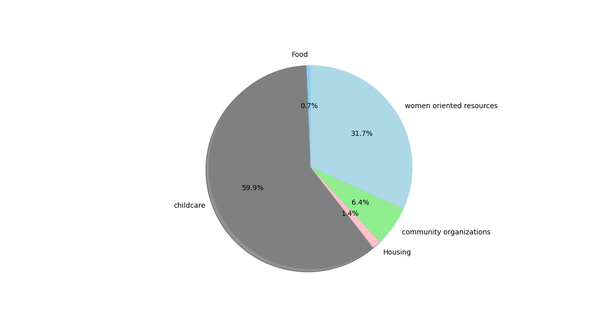
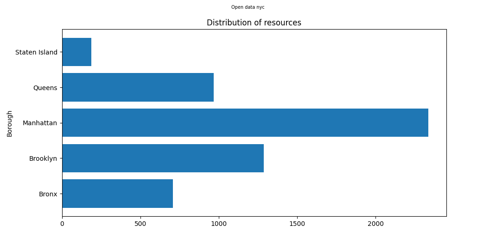
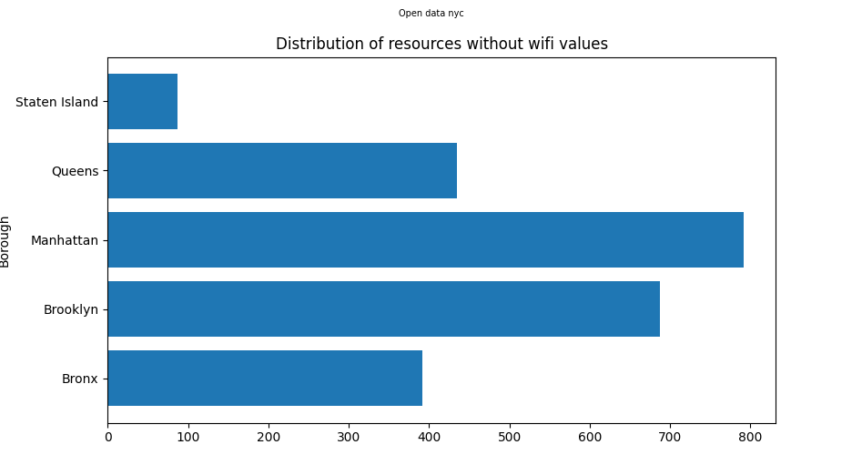
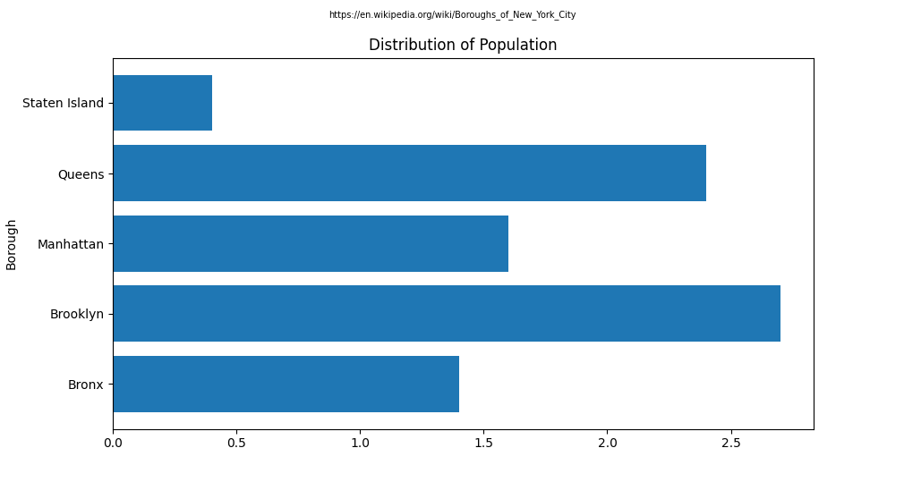
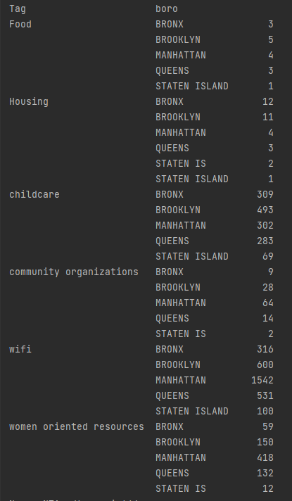

Return Home
Listing of social services: write up
Overview
For this project I had decided to compile the datasets of different social service organizations and clean them so they could be combined into one access point so they would be comprehensible.
This was done out of an acknowledgement that most Socio-Economic concerns are interconnected and the currently accepted model of having to seek out resources one organization at a time
was not taking care of that aspect. Since most organizations only host their data, I took their data and scraped it to fit my own model.My model decided to focus mostly on the aspects that would
concern an average individual. Contact information as well as a descriptor of what the data was about. I dedicated my data scraping to find these specific values.
[NTA, Borough, Zipcode, address, phone numbers, additional information, tags and sources].
NTA: Standing in for name
Borough: Which borough the resource is located in.
Zipcode: The zipcode.
address: The physical address if it has one.
phone: Phone numbers associated with it.
Additional information: Anything I saw that I deemed necessary to bring in. Website, any descriptors.
Tags: What type of social resource it is.
Sources: If applicable which organization the resource comes from.
Using pandas I had gone to each dataset and pulled out the respective information I was looking for. Some data sets had missing or hard to read data so in those cases I either cleaned them up with
Pandas functions or deleted it if it was unuseable. After cleaning up the data I used the final resulting data set for a website that can search through it. I also use matplot.pyplot to plot some simple
data to see if any observations could be made.
Datasets
For this project I had 6 datasets that simply contained information about certain resources. Most of these datasets had what I needed. There was only one that did not fit any parameters to my model
and as such had to unfortunately be discarded. Some of these data sets did have cells missing values, but as long as there was sufficient information left I had left them in the final data set.
Directory of a homeless prevention network: This was a listing of offices for a homeless prevention network. It had a smaller amount of data entries but it had set a prime example of what I thought
would be a helpful model for someone looking for information from organizations
list of afterschool programs for kids: This was a publicly avaliable listing of afterschool programs for kids. A good amount of them were in either schools, libraries or community centers as such they
typically had the information that I was looking for. This data set was sourced from other datasets and it was the dataset that made me consider putting a source attribute to my model. Some people might
want that information if they already know some word to mouth information of an organization.
womens resources database: This was a dataset specifically targeting womens resources. I thought this would be important to include because some resources are different when it comes to gender split.
An immediately example comes to mind is a womens shelter and how it has been reported that women do feel more comfortable in a womens shelter to avoid abuse.
Directory of SNAP centers: This is a listing of SNAP centers. SNAP being The Supplemental Nutrition Assistance Program which helps New Yorkers find food for their day to day lives. This only had
the offical centers so it was a bit smaller than some of the other datasets. Since these were crucial centers very little data was missing about them. Most of them had the afformentioned data that I was
looking for.
community based organizations: This is a listing of community based organizations. A little different from the other data bases that had more government or coporate organized resources. However I did
believe that grassroots organizations will always have a part in helping the community. It could be that someone would feel more comfortable if they were recieving help from someone who shared expriences
closer to what they were feeling. Especially in low socioeconomic enviornments.
Wifi hotspots: This was a large collection of publicly avaliable wifi hot spots. Since these were wifi hot spots that were in public places there was an enormous collection of them to parse through. As
they were relatively simple infrastructure wise a lot of them had some missing information spots. A wifi hotspot after all might not have a phone number or even a name if there are numerous amounts of them
in a single area. However since a wifi hotspot only needs an address to really be located I left in most of the entries even if they were missing a cell or two.
Techniques
I primarily went through the data with Pandas. If the dataset already had the data I wanted in a specific section I just extracted it as it was. If for some reason it was split between two sections
ex: Address 1 and address 2, I reformatted the information from both into a single value. Most of the time it was done through .str manipulation in Pandas. On the occassions that the data was missing
I either allowed the data to be a null value or I specified in the data set that the data for that specific cell was missing. With matplotlib I primarily took the imformation that was cleaned and grouped
it in different ways to see if any patterns emerged.
Citations
Datasets:
Directory of a homeless prevention network
list of afterschool programs for kids
womens resources database
directory of SNAP centers
community based organizations
Wifi hotspots
Tutorial for site: Web page tutorial
Additional insights
One of the first things to consider when looking at this data is the percentage makeup. Data detailing where wifi hotspots are make up over half the entries.

However even taking away the data that was provided by wifi hotspots shows some discrepency between the remaining results
Child care and women oriented resources make up the majority of the remaining data sets.

This is simply due to the difference in amount of data avalible for each tag. The wifi had about 3000+ data entries while some others had less than 100.
It is important to also note the difference in infrastructure between the tags. Wifi hotspots are easier to set up and scatter around than entire
buildings funded by organizations full of volunteers and administrative individuals.As such it makes sense that the wifi tag would have more entries
than some of the other tags that require a lot more infrastructure to be set up. Another interesting analysis to look at would be the make up of
what is in each borough. Unlike the tags it is much more probable that the data entries would have split their locations evenly amoung the five boroughs.

While the distribution may not have been expected to be split evenly exactly, the differences between boroughs are evident.It can be seen the Manhattan has the highest number of instances
in the data, with almost double the amount held by the next highest in Brooklyn. As previously discussed this distribution might be influenced greatly by the wifi data.
Staten Island has by far the lowest. The Bronx is barely at above 500. Looking at the same type of distribution, but this time with out wifi hotspots leads to a slightly
different results.

We can see that the distribution holds a similiar shape to its previous analysis. But this time the difference between boroughs is much smaller. The smaller boroughs like
The Bronx and Staten Island are still lower than the rest, but the amount theyve decreased by is much smaller. Both seem to have lost around 100 rows of data each.
Manhattan however was previously well in the mid 2000s, has suddenly dropped to just about 800. More than half of Manhattans instances were about wifi hot spots. Brooklyn
is now only 100 instances away from Manhattan compared to being less than half of Queens previously. This shows that the boroughs are much closer in regards to administrative
social resources, but none the less have their differences. The other thing to keep in mind is the differences in population. Once those are charted out we can see a clearer
connection to the discrepencies previously seen.

While not a one to one match, this chart showing the population sizes of the boroughs is much more aligned to the distribution of the resources than an equal split would have been.
The only noticable difference would be that Brooklyn has a higher population than Manhattan, but Manhattan has a higher amount of resources attributed to it.

Looking at the distribution within the tags themselves also brings up a similiar distribution. It seems that aside from small differences here and there, the distribution of these resources follows population.
There could however be another underlaying effect at play, that could influence both population and the distribution of resources.